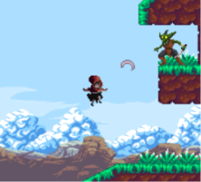
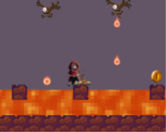

Last Respite
A 2D platformer developed in just five days for a Game Jam, where the player has only one life and one checkpoint.
May 2025Project Overview
Last Respite is a 2D platformer developed in just five days for a Game Jam, built around a unique one-time-use checkpoint mechanic.
The player's objective is to reach the end of the level while avoiding obstacles and enemies. Along the way, players can place a campfire at a location of their choice. This campfire acts as a checkpoint, allowing them to return to that location if they die. However, it can only be placed once, making its positioning an important decision throughout the level.
Main Features
One-Time Checkpoint
Place a campfire at a chosen location, but only once for the rest of the game.
Campfire Respawn
Return to the placed campfire after dying instead of restarting the entire level.
Platforming Challenges
Navigate through the level by jumping over obstacles and avoiding hazards.
Enemy Avoidance
Dodge enemies and find safe ways to finish the game
Game Jam Development
Designed and developed within the time constraints of a five-day Game Jam.
Technologies & Tools
Project Gallery

